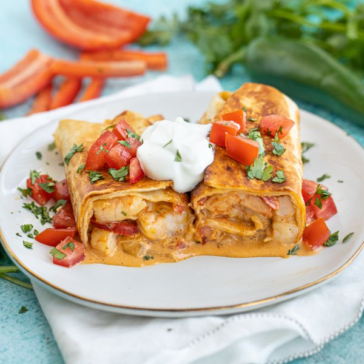

Crispy Shrimp Burrito (Chimichanga) with Tomatoes, Cilantro & Yogurt

Total Time
35 min
Nutrition (Per Serving)
678.4 kcalCalories
41.1 gProtein
49.6 gCarbs
35.2 gFat
Full nutrition table
| Calories | 678.4 kcal |
| Total fat | 35.2 g |
| Saturated fat | 14.1 g |
| Trans fat | 1.5 g |
| Cholesterol | 272.7 mg |
| Sodium | 1686.1 mg |
| Carbohydrates | 49.6 g |
| Fiber | 5.8 g |
| Sugars | 11.8 g |
| Protein | 41.1 g |
| Potassium | 958.7 mg |
| Calcium | 439.8 mg |
| Iron | 4 mg |
| Vitamin A | 1933.7 IU |
| Vitamin C | 109.5 mg |
| Vitamin D | 10.2 IU |
Cookware
Ingredients
- ½ (8 oz) blockcheddar cheese
- 1 small bunchcilantro
- ½ (8 oz) blockcream cheese
- 4 clovesgarlic
- 2jalapeño peppers
- 4large flour tortillas
- ¼ cupplain Greek yogurt
- 1 ½ lbraw peeled shrimp, fresh or frozen
- 2red bell peppers
- 4tomatoes
- 1 mediumyellow onion
- black pepper
- chili powder
- cumin, ground
- extra virgin olive oil
- paprika
- salt
Steps
- Wash and dry the fresh produce.2 red bell peppers
2 jalapeño peppers
1 small bunch cilantro
4 tomatoes - If using frozen shrimp, place them in a colander and run under cold water to thaw them slightly and remove any ice crystals. (If using fresh shrimp, skip this step.) Place the shrimp on a clean towel or paper towels and pat dry.1 ½ lb raw peeled shrimp, fresh or frozen
- Trim, seed, and slice bell peppers into thin strips; place in a medium bowl.
- Quarter jalapeño peppers lengthwise; seed and remove ribs with a spoon. Mince and add to the bowl with the bell pepper. (Be careful with jalapeños; do not touch your eyes and ensure you wash your hands after handling or wear gloves while preparing.)
- Peel and mince garlic; peel and small dice onion. Add both to the bowl.4 cloves garlic
1 medium yellow onion - Preheat a large skillet over medium heat.
- Once the skillet is hot, add oil and swirl to coat the bottom. Add bell pepper, jalapeño, garlic, and onion; cook, stirring occasionally, until veggies soften, 4-5 minutes. (Reserve bowl for next step.)2 tsp extra virgin olive oil
- Meanwhile, coarsely grate cheddar; cut cream cheese into small pieces. Place cheeses in the reserved bowl and set aside.½ (8 oz) block cheddar cheese
½ (8 oz) block cream cheese - Shave cilantro leaves off the stems; discard stems and mince the leaves.
- Add shrimp, half of the cilantro (reserve remaining cilantro for garnish), and spices to the skillet; cook until shrimp are opaque, 1-2 minutes per side.1 tsp chili powder
½ tsp cumin, ground
½ tsp paprika
½ tsp salt
¼ tsp black pepper - Reduce heat to low and add the cheeses. Continue to cook, stirring occasionally, until cheeses melt and combine, 2-3 minutes more. Remove from heat.
- Place tortillas on a flat surface and divide shrimp filling down the center of each one. Fold in sides of tortillas and roll tightly to complete.4 large flour tortillas
- Wipe the skillet clean with paper towels and return to medium-high heat.
- Once the skillet is hot, add more oil and swirl to coat the bottom. Working in batches if necessary, lay burritos, seam-side down, and cook, rotating every 2-3 minutes, until golden brown and crispy on all sides. Remove from heat.2 tbsp extra virgin olive oil
- Meanwhile, medium dice tomatoes.
- To serve, cut burritos in half and divide between plates. Top with tomatoes, reserved cilantro, and yogurt. Enjoy!¼ cup plain Greek yogurt